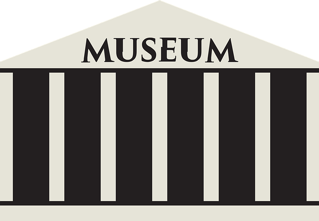

We tell the story of Cologne with all its facets and contradictions
in a new and modern way: interesting, exciting, original and
well-founded.
read more

Kölnisches Stadtmuseum
Museum für Angewandte Kunst Köln
Studiengebäude des Römisch-Germanisches Museums
Museum für Ostasiatische Kunst
Museum Schnütgen